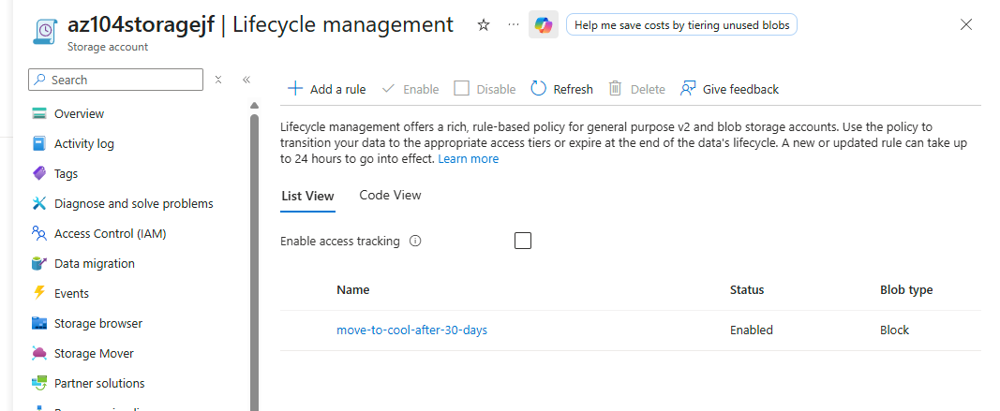
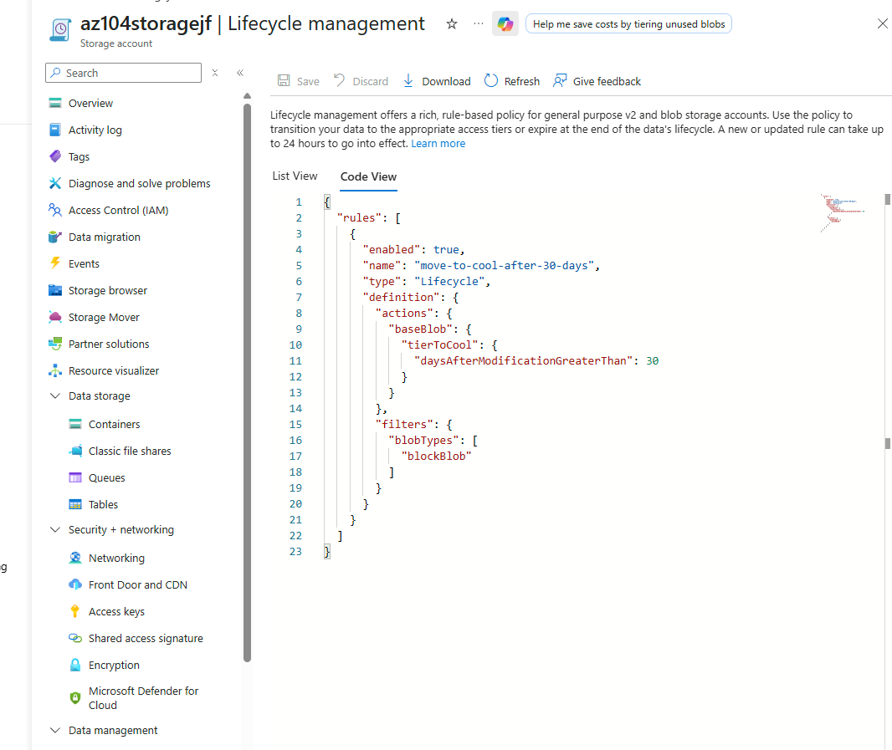
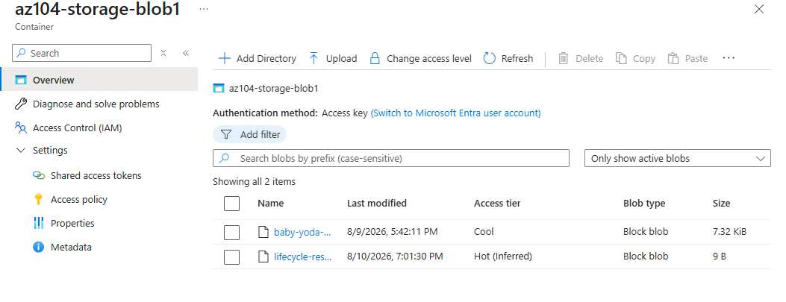
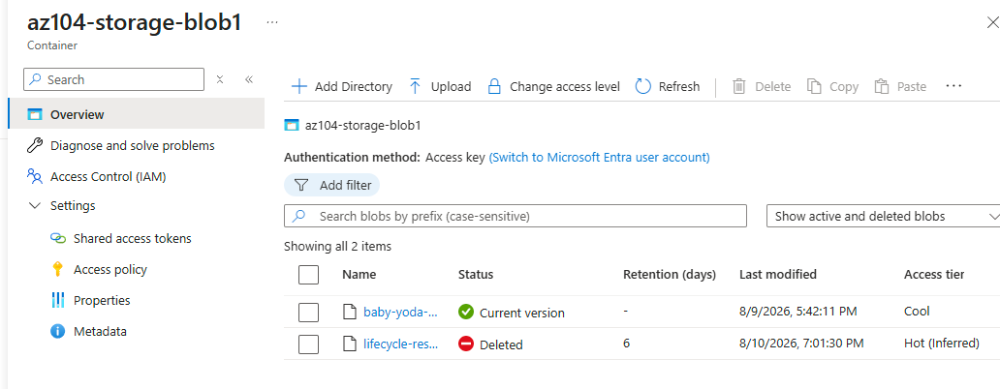
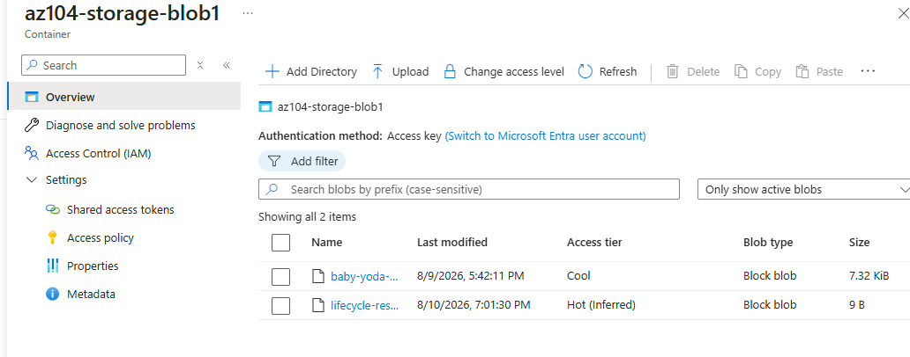

Automating what Lab 2.1 did manually, and proving what Lab 2.1's soft delete setting actually does. A lifecycle management rule watches blobs based on age and retiers them to Cool automatically. Soft delete turns an accidental deletion into a recoverable event instead of a permanent one. The final lab in the Storage domain.
30 days is a common baseline because access patterns tend to drop off sharply after the first month; data touched recently tends to keep getting touched, and data that hasn't been touched in 30 days usually keeps not being touched. Going straight to Archive from a rule like this would be too aggressive for a lot of real workloads, since Archive requires a multi-hour rehydration wait before the data is readable again at all. Cool is the middle ground: cheaper storage than Hot, but still instantly readable. Same Hot vs. Cool vs. Archive tradeoff from Lab 2.1, just automated instead of manual this time.
Manually changing a blob's tier works fine for one file someone is actively paying attention to. It does not scale to a storage account with thousands of objects, where nobody is realistically going to track each file's age and retier it by hand. A lifecycle rule turns a one-time decision into a standing policy that runs forever without anyone thinking about it again, which is the actual point of automation generally, not just this specific Azure feature.
Soft delete is not a real backup strategy, it is a short recovery window for exactly the mistake this lab simulated: someone deleting something they should not have. 7 days is a real tradeoff, not a neutral default. Long enough to catch most accidental deletions during active work, short enough that Azure is not charging to retain every deleted object indefinitely. A compliance-heavy environment might extend this to 30 or 90 days at a real ongoing storage cost. A fast-moving dev environment might keep it even shorter. There is no universally correct number here, only a deliberate choice between recovery confidence and cost.
Automated one existing behavior and stress-tested one existing safety net, both against the storage account from Lab 2.1.





"If you can build it again tomorrow without looking at yesterday's code, you've learned it. If you need to copy and paste it again, you've only completed a tutorial."
I am learning Infrastructure as Code deliberately, specifically Terraform and Bicep, rather than treating them as copy-paste snippets. The code below reflects actual understanding of each resource, not just reproduced boilerplate.
Lifecycle management policies and soft delete settings are both native properties on the storage account resource type in Bicep.